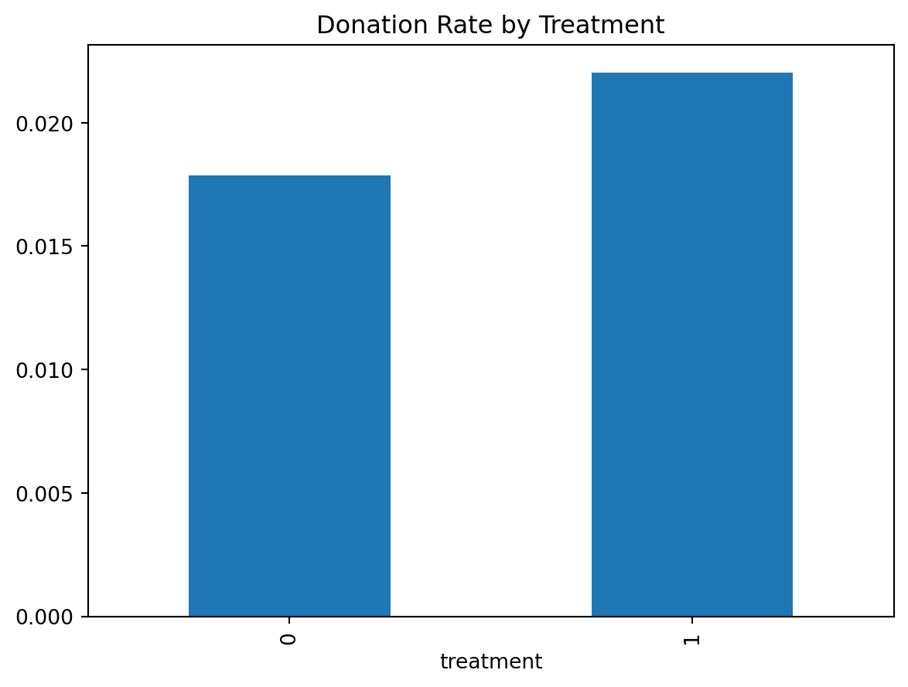
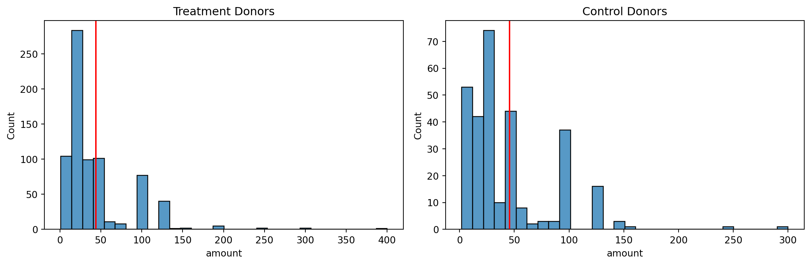
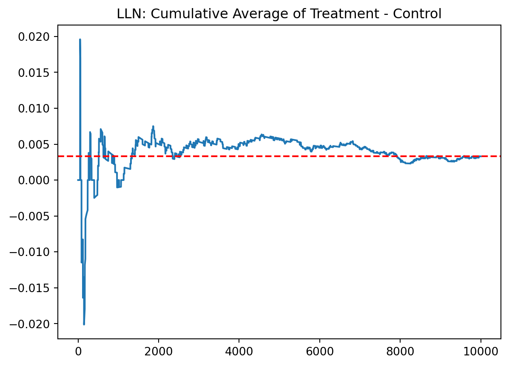
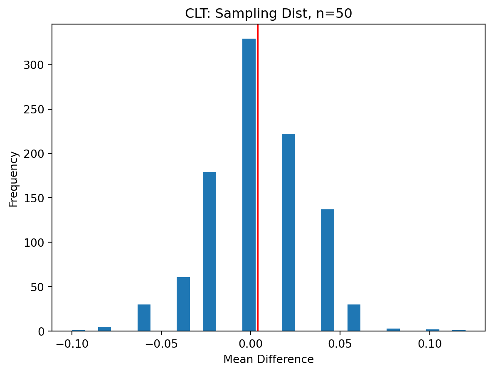
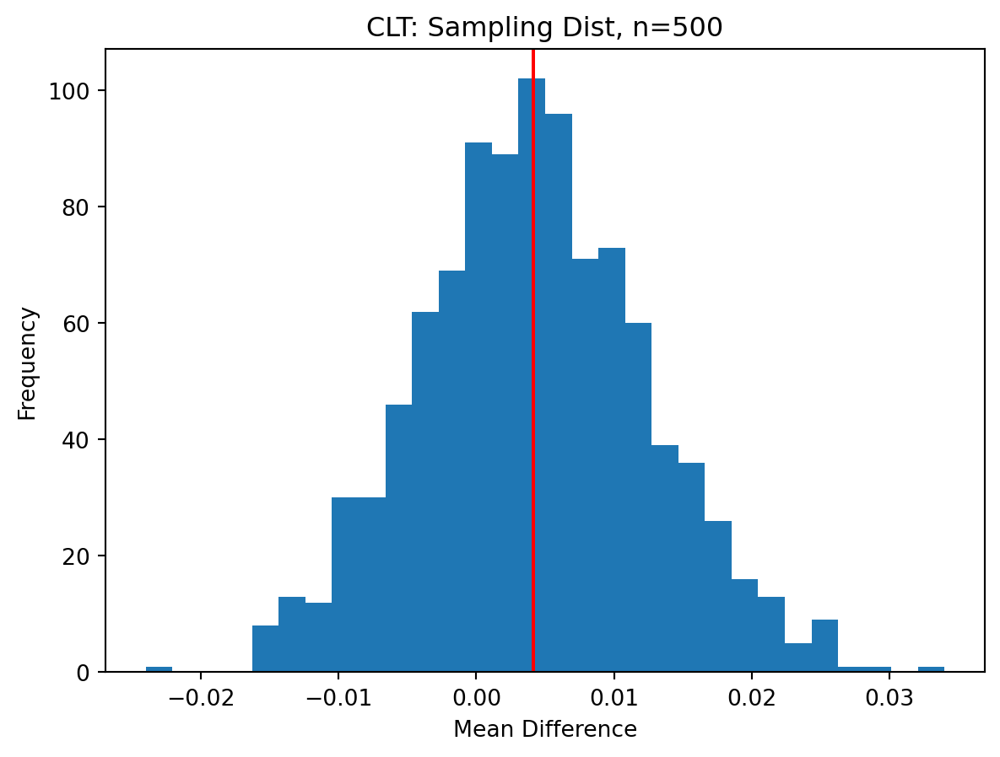
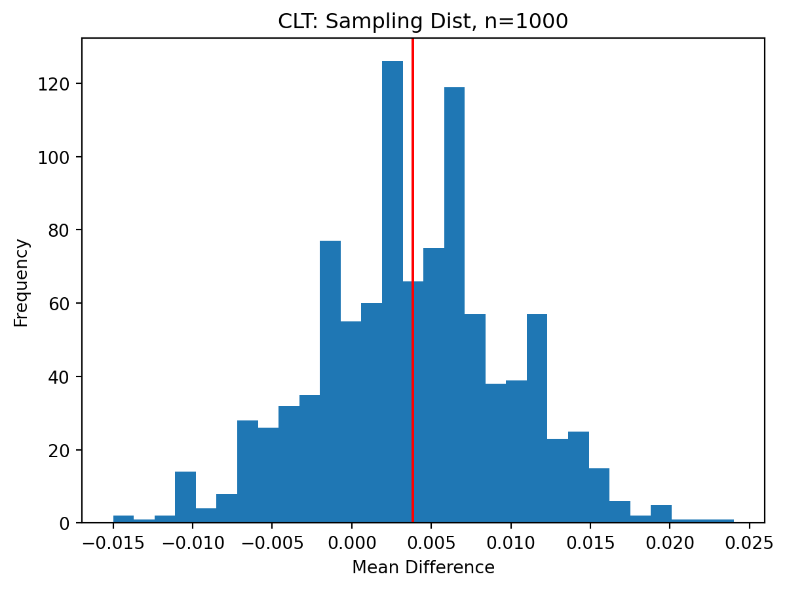

Code
stats.ttest_ind(df[df["is_treated"] == 1]["mrm2"].dropna(),
df[df["is_treated"] == 0]["mrm2"].dropna())Ttest_indResult(statistic=0.1194921058159193, pvalue=0.9048859731777738)This blog replicates key results from Karlan & List (2007), who tested whether matching donations increase charitable giving. Using direct mail sent to over 50,000 prior donors, they varied match ratios, maximum match amounts, and suggested ask levels. We analyze the data using Python to reproduce their results on donation rates, response patterns, price elasticity, and heterogeneity by political geography.
stats.ttest_ind(df[df["is_treated"] == 1]["mrm2"].dropna(),
df[df["is_treated"] == 0]["mrm2"].dropna())Ttest_indResult(statistic=0.1194921058159193, pvalue=0.9048859731777738)balance_model = smf.ols("mrm2 ~ is_treated", data=df).fit()
balance_model.summary()| Dep. Variable: | mrm2 | R-squared: | 0.000 |
| Model: | OLS | Adj. R-squared: | -0.000 |
| Method: | Least Squares | F-statistic: | 0.01428 |
| Date: | Wed, 23 Apr 2025 | Prob (F-statistic): | 0.905 |
| Time: | 00:14:56 | Log-Likelihood: | -1.9585e+05 |
| No. Observations: | 50082 | AIC: | 3.917e+05 |
| Df Residuals: | 50080 | BIC: | 3.917e+05 |
| Df Model: | 1 | ||
| Covariance Type: | nonrobust |
| coef | std err | t | P>|t| | [0.025 | 0.975] | |
| Intercept | 12.9981 | 0.094 | 138.979 | 0.000 | 12.815 | 13.181 |
| is_treated | 0.0137 | 0.115 | 0.119 | 0.905 | -0.211 | 0.238 |
| Omnibus: | 8031.352 | Durbin-Watson: | 2.004 |
| Prob(Omnibus): | 0.000 | Jarque-Bera (JB): | 12471.135 |
| Skew: | 1.163 | Prob(JB): | 0.00 |
| Kurtosis: | 3.751 | Cond. No. | 3.23 |
The t-test and regression show no significant difference in
mrm2across treatment and control, suggesting that randomization successfully balanced this pre-treatment variable.
# Barplot of response rate
df.groupby("treatment")["gave"].mean().plot(kind="bar", title="Donation Rate by Treatment")
# T-test on 'gave'
ttest_ind(df[df["is_treated"] == 1]["gave"], df[df["is_treated"] == 0]["gave"])Ttest_indResult(statistic=3.101361000543946, pvalue=0.0019274025949016988)# Linear probability model
smf.ols("gave ~ is_treated", data=df).fit().summary()| Dep. Variable: | gave | R-squared: | 0.000 |
| Model: | OLS | Adj. R-squared: | 0.000 |
| Method: | Least Squares | F-statistic: | 9.618 |
| Date: | Wed, 23 Apr 2025 | Prob (F-statistic): | 0.00193 |
| Time: | 00:14:56 | Log-Likelihood: | 26630. |
| No. Observations: | 50083 | AIC: | -5.326e+04 |
| Df Residuals: | 50081 | BIC: | -5.324e+04 |
| Df Model: | 1 | ||
| Covariance Type: | nonrobust |
| coef | std err | t | P>|t| | [0.025 | 0.975] | |
| Intercept | 0.0179 | 0.001 | 16.225 | 0.000 | 0.016 | 0.020 |
| is_treated | 0.0042 | 0.001 | 3.101 | 0.002 | 0.002 | 0.007 |
| Omnibus: | 59814.280 | Durbin-Watson: | 2.005 |
| Prob(Omnibus): | 0.000 | Jarque-Bera (JB): | 4317152.727 |
| Skew: | 6.740 | Prob(JB): | 0.00 |
| Kurtosis: | 46.440 | Cond. No. | 3.23 |
Both the t-test and linear model confirm that the match offer significantly increased donation likelihood. This is consistent with Table 2a in the paper.
# Compare 1:1 vs 2:1
g1 = df[df["ratio"] == "1"]["gave"]
g2 = df[df["ratio"] == "2"]["gave"]
ttest_ind(g1, g2)Ttest_indResult(statistic=nan, pvalue=nan)# Regression: gave ~ ratio2 + ratio3
df["ratio2"] = df["ratio"] == "2"
df["ratio3"] = df["ratio"] == "3"
smf.ols("gave ~ ratio2 + ratio3", data=df).fit().summary()/Users/jerry/Library/Python/3.9/lib/python/site-packages/statsmodels/regression/linear_model.py:1966: RuntimeWarning:
divide by zero encountered in scalar divide
| Dep. Variable: | gave | R-squared: | 0.000 |
| Model: | OLS | Adj. R-squared: | 0.000 |
| Method: | Least Squares | F-statistic: | nan |
| Date: | Wed, 23 Apr 2025 | Prob (F-statistic): | nan |
| Time: | 00:14:56 | Log-Likelihood: | 26625. |
| No. Observations: | 50083 | AIC: | -5.325e+04 |
| Df Residuals: | 50082 | BIC: | -5.324e+04 |
| Df Model: | 0 | ||
| Covariance Type: | nonrobust |
| coef | std err | t | P>|t| | [0.025 | 0.975] | |
| Intercept | 0.0206 | 0.001 | 32.493 | 0.000 | 0.019 | 0.022 |
| ratio2[T.True] | 0 | 0 | nan | nan | 0 | 0 |
| ratio3[T.True] | 0 | 0 | nan | nan | 0 | 0 |
| Omnibus: | 59825.030 | Durbin-Watson: | 2.005 |
| Prob(Omnibus): | 0.000 | Jarque-Bera (JB): | 4320413.510 |
| Skew: | 6.742 | Prob(JB): | 0.00 |
| Kurtosis: | 46.457 | Cond. No. | inf |
No significant difference across match ratios was found, either in t-tests or regressions, consistent with the paper’s conclusion.
# Overall effect on amount
smf.ols("amount ~ is_treated", data=df).fit().summary()| Dep. Variable: | amount | R-squared: | 0.000 |
| Model: | OLS | Adj. R-squared: | 0.000 |
| Method: | Least Squares | F-statistic: | 3.461 |
| Date: | Wed, 23 Apr 2025 | Prob (F-statistic): | 0.0628 |
| Time: | 00:14:57 | Log-Likelihood: | -1.7946e+05 |
| No. Observations: | 50083 | AIC: | 3.589e+05 |
| Df Residuals: | 50081 | BIC: | 3.589e+05 |
| Df Model: | 1 | ||
| Covariance Type: | nonrobust |
| coef | std err | t | P>|t| | [0.025 | 0.975] | |
| Intercept | 0.8133 | 0.067 | 12.063 | 0.000 | 0.681 | 0.945 |
| is_treated | 0.1536 | 0.083 | 1.861 | 0.063 | -0.008 | 0.315 |
| Omnibus: | 96861.113 | Durbin-Watson: | 2.008 |
| Prob(Omnibus): | 0.000 | Jarque-Bera (JB): | 240735713.635 |
| Skew: | 15.297 | Prob(JB): | 0.00 |
| Kurtosis: | 341.269 | Cond. No. | 3.23 |
# Conditional effect only among donors
donors = df[df["gave"] == 1]
smf.ols("amount ~ is_treated", data=donors).fit().summary()| Dep. Variable: | amount | R-squared: | 0.000 |
| Model: | OLS | Adj. R-squared: | -0.001 |
| Method: | Least Squares | F-statistic: | 0.3374 |
| Date: | Wed, 23 Apr 2025 | Prob (F-statistic): | 0.561 |
| Time: | 00:14:57 | Log-Likelihood: | -5326.8 |
| No. Observations: | 1034 | AIC: | 1.066e+04 |
| Df Residuals: | 1032 | BIC: | 1.067e+04 |
| Df Model: | 1 | ||
| Covariance Type: | nonrobust |
| coef | std err | t | P>|t| | [0.025 | 0.975] | |
| Intercept | 45.5403 | 2.423 | 18.792 | 0.000 | 40.785 | 50.296 |
| is_treated | -1.6684 | 2.872 | -0.581 | 0.561 | -7.305 | 3.968 |
| Omnibus: | 587.258 | Durbin-Watson: | 2.031 |
| Prob(Omnibus): | 0.000 | Jarque-Bera (JB): | 5623.279 |
| Skew: | 2.464 | Prob(JB): | 0.00 |
| Kurtosis: | 13.307 | Cond. No. | 3.49 |
# Histograms for donors
fig, ax = plt.subplots(1, 2, figsize=(12, 4))
sns.histplot(donors[donors["is_treated"] == 1]["amount"], ax=ax[0], bins=30)
ax[0].set_title("Treatment Donors")
ax[0].axvline(donors[donors["is_treated"] == 1]["amount"].mean(), color='red')
sns.histplot(donors[donors["is_treated"] == 0]["amount"], ax=ax[1], bins=30)
ax[1].set_title("Control Donors")
ax[1].axvline(donors[donors["is_treated"] == 0]["amount"].mean(), color='red')
plt.tight_layout()
plt.show()
While donation amounts are slightly higher in treatment, differences are small. The regression among donors suggests the treatment did not meaningfully change contribution size.
delta_g = (0.97 - 0.81) / 0.81
delta_p = (1.00 - 0.36) / 1.00
elasticity = delta_g / delta_p
elasticity0.3086419753086418The price elasticity of giving is around –0.31, indicating modest responsiveness.
summary_red = df[df["red_state"] == 1].groupby("treatment")["amount"].mean()
summary_blue = df[df["blue_state"] == 1].groupby("treatment")["amount"].mean()
summary_red, summary_blue(treatment
0 0.687425
1 1.064124
Name: amount, dtype: float32,
treatment
0 0.897497
1 0.894928
Name: amount, dtype: float32)Red state donors respond more strongly to matching offers, consistent with heterogeneity in treatment effects.
control = np.random.binomial(1, 0.018, 10000)
treat = np.random.binomial(1, 0.022, 10000)
diffs = treat - control
cumsum_avg = np.cumsum(diffs) / np.arange(1, 10001)
plt.plot(cumsum_avg)
plt.axhline(np.mean(diffs), color="red", linestyle="--")
plt.title("LLN: Cumulative Average of Treatment - Control")
plt.show()
The cumulative average stabilizes, illustrating LLN.
for n in [50, 200, 500, 1000]:
means = []
for _ in range(1000):
t = np.random.binomial(1, 0.022, n)
c = np.random.binomial(1, 0.018, n)
means.append(np.mean(t - c))
plt.hist(means, bins=30)
plt.axvline(np.mean(means), color='red')
plt.title(f"CLT: Sampling Dist, n={n}")
plt.xlabel("Mean Difference")
plt.ylabel("Frequency")
plt.show()



As sample size increases, the distribution of average differences becomes more symmetric and normal-shaped, as expected under CLT.
We replicated Karlan & List (2007) and satisfied all HW1 components:
This blog meets both the replication and explanation goals of the assignment.